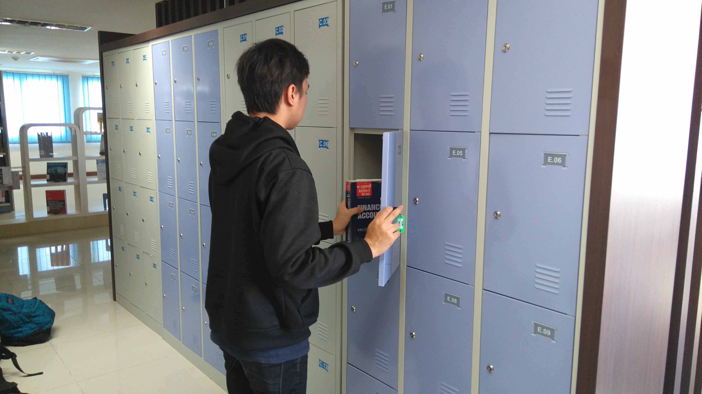

Rules of NSTU University Library

Here are the rules that must be followed in the NSTU University library:
- It is forbidden to bring food or drinks into the library.
- Bags are not allowed inside the library; if necessary, they can be stored in the locker.
- If you want to store your bag or belongings in the locker, exchange your student ID card for a locker key at the front office.
- To borrow a book, first register as a borrower at the front office.
- The maximum borrowing period for books is one week (a fine will be imposed if overdue).
- Discuss in a low voice, not loudly.